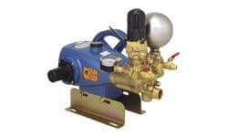

knapsack type motor-powered sprayers with rechargeable Battery
knapsack type power sprayers
knapsack type power mist dusters
high pressure jet cleaners / pressure washer
house sprayers
auto runners
brush Cutters
power sprayers

power sprayers
features
Our power sprayer pumps are available in a wide range of sizes to meet specific horsepower reqirements. All our power Sprayers are equipped with ceramic plungers for extra durability and are excellent for high pressure use.
This portable power sprayer is lightweight and has handles for ease of loading and transporting. TH direct coupling between engine and pump shaft improves safety and efficiency. Picture：CSP-425D5
This portable power sprayer is lightweight and has handles for ease of loading and transporting. TH direct coupling between engine and pump shaft improves safety and efficiency. Picture：CSP-425D5
Improved design of electrostatic pesticide fogger ・Uniform dispersion The pesticide adhesion to the back of leaves is improved. ・Economical Spraying on crops is effective, economical and environmentally friendly due to less fall loss of pesticide. It runs with 4 AA Alkali batteries under Economy Mode for 15 hours and Turbo Mode for 8 hours. Using time may fluctuate by the performance of the battery.
Improved design of original electrostatic technology by downsizing the electrode. Ideal for pest control of standing crops such as cucumbers, eggplants and tomatoes. 4 heads reduces the amount of time and energy for application.
Improved design of the original electrostatic technology by downsizing the electrode. Nozzle lances are adjustable both vertically or horizontally so useable for both standing crops, such as cucumbers, tomatoes, eggplants, etc., and flat crops, such as watermelons, strawberries, cabbages, etc.
This pressure washer is lightweight and compact and is ideal for not only pest and weed control applications but also washing with high volume. Picture：JAS-03CDT
This pressure washer design is simple, compact, portable and powerful (100kgf/cm2-150kgf/cm2). It gets load on pump when nozzle is opened which saves energy and prolongs the life of pump. This model is ideal for tree bark removal.
Greenhouse pest prevention and extermination can be done unmanned with this sprayer. Cold fogger sprays at 2.5 micron particle level for uniform coverage of foliage entire greenhouse.
This sprayer moves automatically between furrows as it pulls spray hose along and disperse pest control product. Operates smooth and stable while maintaining vertical position of nozzles.
Our power sprayer pumps are available in a wide range of sizes to meet specific horsepower reqirements. All our power Sprayers are equipped with ceramic plungers for extra durability and are excellent for high pressure use.
This portable power sprayer is lightweight and has handles for ease of loading and transporting. TH direct coupling between engine and pump shaft improves safety and efficiency. Picture：CSP-425D5
This portable power sprayer is lightweight and has handles for ease of loading and transporting. TH direct coupling between engine and pump shaft improves safety and efficiency. Picture：CSP-425D5
Improved design of electrostatic pesticide fogger ・Uniform dispersion The pesticide adhesion to the back of leaves is improved. ・Economical Spraying on crops is effective, economical and environmentally friendly due to less fall loss of pesticide. It runs with 4 AA Alkali batteries under Economy Mode for 15 hours and Turbo Mode for 8 hours. Using time may fluctuate by the performance of the battery.
Improved design of original electrostatic technology by downsizing the electrode. Ideal for pest control of standing crops such as cucumbers, eggplants and tomatoes. 4 heads reduces the amount of time and energy for application.
Improved design of the original electrostatic technology by downsizing the electrode. Nozzle lances are adjustable both vertically or horizontally so useable for both standing crops, such as cucumbers, tomatoes, eggplants, etc., and flat crops, such as watermelons, strawberries, cabbages, etc.
This pressure washer is lightweight and compact and is ideal for not only pest and weed control applications but also washing with high volume. Picture：JAS-03CDT
This pressure washer design is simple, compact, portable and powerful (100kgf/cm2-150kgf/cm2). It gets load on pump when nozzle is opened which saves energy and prolongs the life of pump. This model is ideal for tree bark removal.
Greenhouse pest prevention and extermination can be done unmanned with this sprayer. Cold fogger sprays at 2.5 micron particle level for uniform coverage of foliage entire greenhouse.
This sprayer moves automatically between furrows as it pulls spray hose along and disperse pest control product. Operates smooth and stable while maintaining vertical position of nozzles.